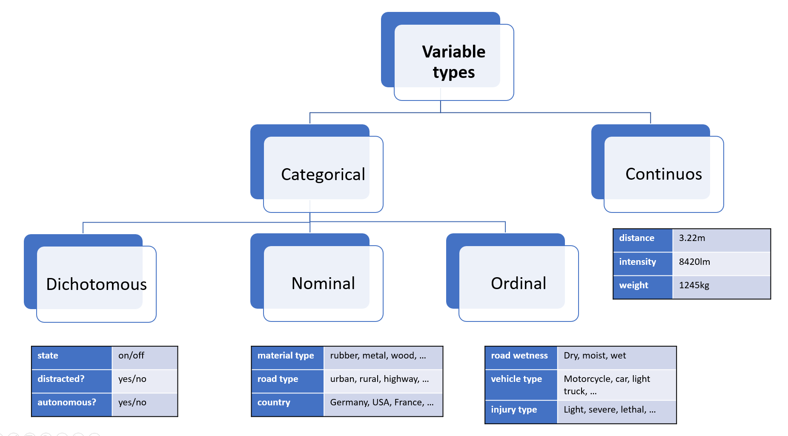
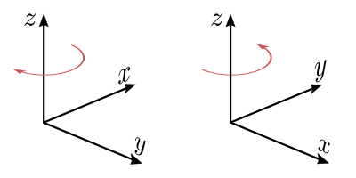
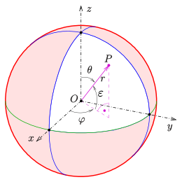
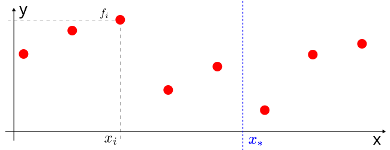
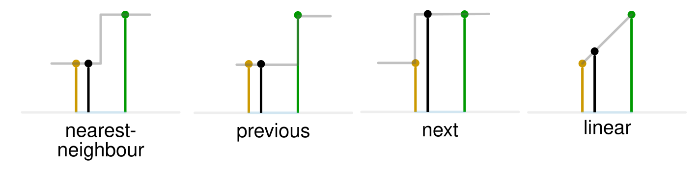
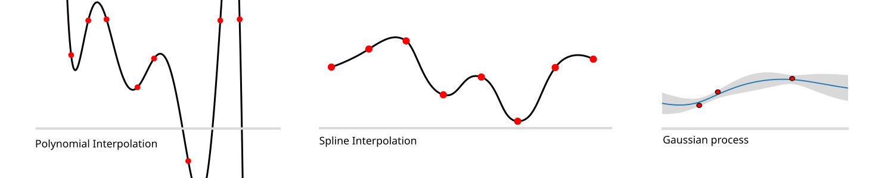
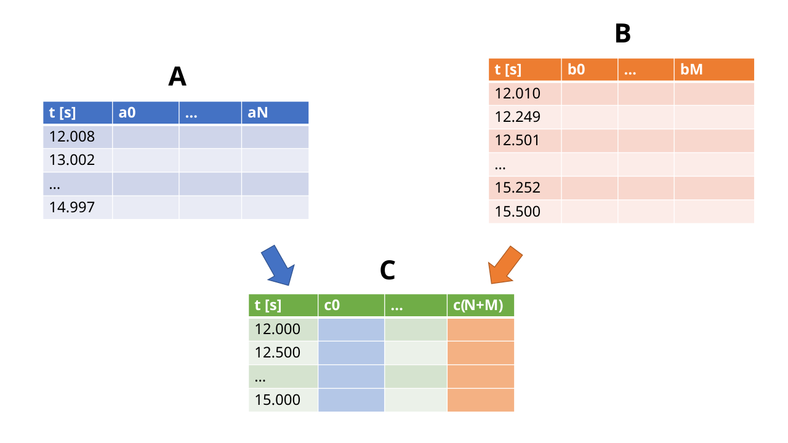

What is this book about
The automotive industry is a rapidly evolving field, with technological advancements and increasing consumer demands driving innovation and growth. In recent years, the use of data analysis has become increasingly important in the industry, allowing players to make well-grounded decisions and gain a competitive edge in both function and safety.
This book focuses on the theoretical foundations of data analysis in the automotive industry, exploring key concepts such as interpolation, coordinate transformations and basic knowledge behind the state-of the art sensor technology. Furthermore, you receive a systematic view on processing and combining spatiotemporal- and sensor data from various sources.
With clear language, illustrations, practical examples and references to further resources, this book provides a comprehensive overview of how these techniques can be applied to analyse and optimize various aspects of the assisted- or automated driving.
Whether you are a data analyst, engineer, or automotive industry professional, this book provides an essential guide to the theoretical foundations of data analysis in the automotive industry space. By understanding these key concepts and techniques, you can drive and guide innovation in this dynamic and exciting field.
This book tries to fulfil the following goals:
- Introduce a common terminology across data analysis tasks in automotive space
- Provide foundational knowledge to work with various sensors used for various driving tasks
- Showcase state-of-the art python libraries for a specific topic
Variable types
Overview
In the context of automotive data analysis, a variable can be thought of as a (static) characteristic or a measurement that can change or vary over time. Variables can be used to describe different aspects of the environment or the vehicle itself, such as its position, speed, acceleration, size, distance, object type or colour.
Variables play a crucial role in automotive data analysis because they allow us to measure and quantify the behavior of a vehicle and its surroundings. By collecting and analyzing data on these variables, we can gain insights into how an (automated) vehicle is performing, identify critical situations, evaluate the sensor performance and finally reason about its safety.
It's important to note that variables in automotive data analysis can come in different forms, such as continuous variables (e.g., speed, size or acceleration) or categorical variables (e.g., material, colour and model of the vehicle).

Taxonomy
Categorical variables
Nominal variables are variables that have categories or labels with no inherent order or hierarchy. For example, in automotive data analysis, a nominal variable could be the make or model of a vehicle. Each vehicle belongs to a particular make and model category, but there is no inherent order or ranking between different categories.
Dichotomous variables are variables that have only two possible categories or values. For example, in automotive data analysis, a dichotomous variable could be whether a vehicle is electric or gasoline-powered. Dichotomous variables are often analyzed using binary logistic regression, which can help identify factors that are associated with the presence or absence of a particular category or value.
Ordinal variables, on the other hand, have categories or labels that can be ranked or ordered based on their relative value or magnitude. For example, in automotive data analysis, an ordinal variable could be the level of fuel efficiency of different vehicles, which can be ranked from most fuel-efficient to least fuel-efficient. Ordinal variables are analyzed using measures such as median and quartiles, which can provide insights into the central tendency and variability of the data.
Continuous variables
Another important type of variable in statistics is the continuous variable. Unlike nominal, ordinal, and dichotomous variables, which are categorical in nature, continuous variables are numerical and can take any value within a range.
Note that you can define either ordinal variables based on intervals of a single continuous variable, which can sometimes simplify an analysis or a metric.
Representation in Python
The following table gives a high level overview about the recommended representation of the above mentioned types
in Python. In addition to Python-native types included in the standard library, the table lists types used in
numpy and pandas, which is more convenient for larger analysis tasks.
Of course you can also represent a nominal variable with pre-defined float values such as [0.0, 1.0, 2.0] for "truck", "bus" and "motorcycle",
but the further data-processing and code is less efficient (e.g. float16 needs double the memory of int8), and more error prone.
In addition you would also miss mechanisms from libraries like pandas,
which prevent computing the mean() on a categorical column.
The time can be represented as a continuous variable, however there are specialized datatypes in both Python's standard lib and numpy/pandas. This enables a more convenient handling with time zones and facilitates doing algebra (e.g. computing time differences).
| Variable type | scalar | numpy 1 | pandas |
|---|---|---|---|
| Nominal | int, enum.Enum | int8 | CategoricalDtype |
| Ordinal | ìnt, enum.Enum | int8 | CategoricalDtype |
| Dichotomous | bool | bool 2 | bool |
| Continuous | float | float32, double | float32, double |
| Time | float / datetime.datetime | datetime64 | datetime64 |
Note that you can convert a continuous variable to a ordinal one using pandas.cut function.
Exercises
- Create an array of 100 uniformly distributed random numbers (0-150m) representing the measured distance from a LIDAR sensor. Categorize them in three groups, for <50m, <100m, <150m. Count the number of occurrences for each group.
- What is the most-memory efficient datatype for representing human weight? How would you represent time for a lane change manoeuvre?
References
1 Refer to the official NumPy docs for reference regarding internal representation in memory.
Coordinate systems
Cartesian coordinate system
Introduction
This system is the first system we hear about in high school. First it is taught in terms of x,y-graphs where pupils enter pairs of numbers in a 2-D system. Later, we learn the term function which is can be represented graphically as a curve in this system.
A bit about history: Cartesian coordinates are named for René Descartes whose invention of them in the 17th century revolutionized mathematics by providing the first systematic link between geometry and algebra. Using the Cartesian coordinate system, geometric shapes (such as curves) can be described by equations involving the coordinates of points of the shape.1
Left- vs. right-handed
In 2-D system, the position of x and y is fixed for many people, where the y axis is usually pointed toward the north. For a 3-D system however, there are multiple definitions:

Figure 1: Left-handed coordinates on the left, right-handed coordinates on the right. Image from Wikipedia
{kind=link}
For right-handed coordinates, the right thumb points along the z-axis in the positive direction and the curling motion of the fingers of the right hand represents a motion from the first or x-axis to the second or y-axis. When viewed from the top or z-axis the system is counter-clockwise.2 Robotic applications and frameworks such as ROS, use the right hand-rule, see 3.
For left-handed coordinates, the left thumb points along the z-axis in the positive direction and the curling motion of the fingers of the left hand represent a motion from the first or x-axis to the second or y-axis. When viewed from the top or z-axis the system is clockwise.2
Spherical coordinate system
Spherical coordinate system is used across a a wide palette of applications, besides astronomy and geo-informatics, it is essential for automotive applications, too. A RADAR or LIDAR sensor output their readings by providing the range, azimuth- and elevation-angle to the object of the detection. This section provides a short overview over notation, characteristics and commonly used coordinate transformations.
A spherical coordinate system (Fig. 2) is defined over the radial distance \( r \), azimuth angle \( \varphi \) and inclination angle \( \theta \):

Figure 2: Right-handed cartesian and spherical coordinate system in ISO 80000-2:2019 convention. Image from Wikipedia, extended with \( \varepsilon \) elevation angle.
{kind=link}
The angle the \( \varepsilon = \frac \pi 2 - \theta \) is often used instead of \( \theta \) for data coming from RADAR or LIDAR sensors. When referring to field of view of a sensor, a horizontal range refers to the extent of \( \varphi \) and vertical to \( \varepsilon \).
Transformation to Cartesian
The spherical coordinates of a point in the ISO convention (i.e. for physics: radius r, inclination θ, azimuth φ) can be obtained from its Cartesian coordinates (x, y, z) by the formulae4:
\[ r = \sqrt{x^2 + y^2 + z^2} \\ \theta = \arccos\frac{z}{\sqrt{x^2 + y^2 + z^2}} \\ \varphi = sgn(y)\arccos\frac{x}{\sqrt{x^2+y^2}} \]
The sign function \( sgn(x) \) returns 1 for positive numbers \( x > 0\), 0 for \( x = 0\) and -1 for negative \( x < 0\).5
Conversely, the Cartesian coordinates may be retrieved from the spherical coordinates by4:
\[ x = r \sin\theta \, \cos\varphi \\ y = r \sin\theta \, \sin\varphi \\ z = r \cos\theta \]
References
1 Wikipedia - Cartesian Coordinate System, link
2 Wikipedia - Right hand rule, link
3 ROS REP103 - Standard Units of Measure and Coordinate Conventions, link
4 Wikipedia - Spherical coordinate system, link
5 Wikipedia - Sign function, link
Data representation
This chapter gives a rough overview of data formats often used in automotive industry for recordings, analysis and exchange.
Text based formats
CSV
CSV stands for "Comma-Separated Values", and it is a simple file format used to store tabular data (data organized in rows and columns).
In a CSV file, each row represents a record, and each column represents a field. Fields are separated by a delimiter, most commonly a comma (hence the name). However, other delimiters such as semicolons or tabs can also be used.
The first row of a CSV file often contains the names of the fields (also called headers), while the subsequent rows contain the actual data.
time_ms, object_id, x, y, z
1678554731011, 40, 74.2, 3.51, -0.03
1678554731011, 42, 69.2, 0.12, 0.02
1678554731022, 40, 73.6, 3.48, 0.022
1678554731022, 42, 73.8, -0.15, -0.031
...
CSV files are commonly used to exchange data between different software applications because they are simple and easy to read and write. A big advantage of them is being easily readable by a human for short plausibility checks. In parallel computing, the line-delimited structure allows an easier distribution to multiple computing threads (e.g. CPU-cores, processors, virtual machines).
However, they have some limitations, such as being memory intensive (a number 1678554731022 has to be represented with 13 bytes with a byte per character.) By nature, since CSV represents tabular data, it is not able to represent complex data structures such as graphs or list of lists.
Also, containing special characters (without encoding information from the author) that can cause issues when importing or exporting data.
JSON
JSON stands for "JavaScript Object Notation", and it is a lightweight data interchange format used to store and exchange structured data between different software applications. In a JSON file, data is represented as key-value pairs {"key": value} or as an ordered list of values. JSON is based on a subset of the JavaScript programming language syntax but is independent of any programming language.
JSON files use a simple and intuitive syntax that is easy for humans to read and write. JSON files consist of objects enclosed in curly braces {} and arrays enclosed in square brackets []. An object contains a set of key-value pairs, while an array contains an ordered list of values:
{
"records": [
{
"time_ms": 1678554731011,
"objects": [
{"id": 40, "x": 74.2, "y": 3.51, "z": -0.03},
{"id": 42, "x": 69.2, "y": 0.12, "z": 0.02}
]
},
{
"time_ms": 1678554731022,
"objects": [
{"id": 40, "x": 73.6, "y": 3.48, "z": 0.022},
...
]
},
]
}
JSON files are commonly used in Web-technology to transmit data between a server and a web application, but they can also be used to store configuration data or other structured data types. It is supported by most modern programming languages and can be easily parsed and generated using libraries or built-in functions.
Although JSON has many advantages, it also has some disadvantages:
-
Limited data types: JSON supports only a limited set of data types, such as strings, numbers, boolean values, and null. This means that more complex data structures, such as dates or binary data, need to be encoded or decoded using workarounds.
-
Large file sizes: In some cases, JSON files can be larger than other data formats, such as CSV, because of its verbose nature. This can lead to slower data transfers or larger loading times.
A notable extension of JSON is JSONL, which stands for Line delimited JSON, where each line represents a single record (e.g. point in time).
XML, YAML, INI, .env ...
There are many other formats used in web & OS technology and are still existing in many software tools used in automotive industry.
Often they do not hold large arrays of data such hour long recordings with many variable, rather they are used as configuration files. There are some advantages and disadvantages compared to JSON, such as schema checks for XML or support for comments in YAML and .env files.
When you design a complex system with external configuration, consider your stakeholders (users, consumers) and software interacting with your system in your choice.
Binary formats
A binary type cannot be opened in a text editor and interpreted by a human due to binary representation of the numbers (instead of characters in ASCII) and in some cases applied compression.
Spreadsheet formats (xlsx, odt)
TODO
ASAM MDF
MDF (Measurement Data Format) is a binary file format to store recorded or calculated data for post-measurement processing, off-line evaluation or long-term storage. The format has become a de-facto standard for measurement & calibration systems (MC-systems), but is also used in many other application areas.
Parquet
Protobuf
ROS messages
Avro
Custom
Proprietary binary formats ...
Interpolation
Motivation
Interpolation (Latin for inter = between and polire = smoothing) is an essential technique for processing numerical data in the engineering domain. Sensor output recorded over time as time-series usually requires interpolation to reduce the data amount, deal with missing values or as a first step prior to the merge with a another data source.
Mathematically, given a list of \(N\) pairs \( (x_i, f_i) \ \forall i \in 0 \dots N-1 \) (often generated by an unknown function or process \(f(x)\)), we are interested in the intermediate values (i..e \( x_* \)) which are not equal to any of \( x_i \). Those values are often referred as query points. Usually, the list is sorted by \( x \) in ascending manner.

Figure 1: Interpolation problem visualized.
In case we are interested in values of \( x < x_0 \) or \( x > x_{N-1} \) we talk about extrapolation.
Note, that the argument \( x \) can also be time \( t \), in that case we speak about temporal interpolation. Additionally, in this overview we mainly look at the one-dimensional (1D) case, more details on more dimensions can be found in the section below.
There are multiple approaches to interpolate between known data points, which will be categorized and explained in the following sections.
Methods
Across next section, we will introduce three approach families, the first two are separated by the number of points they use for the approximation of intermediate values. The first category are the proximity-based methods, which take one or two sample points into account. The second category take more then two points into account and will be called global, because they also consider values outside the close proximity. The third family is called application-specific, since some applications require a special consideration when dealing with intermediate values.
Proximity-based
The proximity can be defined based on the numerical distance to the sample points (nearest-neighbour), or based on the position wrt to sample points. The algorithms in the proximity based method family select the value of the nearest point and does not consider the values of neighbouring points at all

Figure 2: Proximity based interpolation methods. Altered version of 1
Nearest-Neighbour
Yielding a piecewise-constant interpolant around a single point. The algorithm is very simple to implement and is commonly used. (https://en.wikipedia.org/wiki/Nearest-neighbor_interpolation)
Previous/Next
In some applications however, especially those dealing with time-series, taking the nearest sample means taking values in the future, which is not always suited. Therefore variation forward-fill ``ffill` exist, where \( f_i \) is true for all \( x \in [x_i, x_{i+1}[ \).
The opposite, backward-fill, where \( f_{i+1} \) is true for all \( x \in [x_i, x_{i+1}[ \) is often used for XYZ.
Linear
Linear interpolation assumes a linear relationship between two sample points, i.e.
\[ f(x) = ax +b = \frac{f_{i+1}- f_{i}}{x_{i+1}- xf_{i}} + f_{i} \ \forall x \in [x_i, x_{i+1}[ \]
Global
Global methods take into account more than two points around the query location \( x_* \). Some methods even take into account all available points.

Figure 3: Global interpolation methods. Images taken from Wikipedia.
Polynomial
A \(n\)-degree polynomial \( p(x) = c_n x^n + c_{n-1} x^{n-1} + \dots + c_0 \) is fitted to multiple points around the query \( x_* \). Mathematically, we can use regression techniques to find the coefficients \( c_j \) or compute an exact solution taking \( n+1 \) points.
Spline
Similar to linear interpolation which uses a linear function for each of intervals \( [x_i, x_{i+1}] \), spline interpolation uses low-degree polynomials in each of the intervals, and chooses the polynomial pieces such that they fit smoothly together. The resulting function is called a spline.
The fitting smoothly requirement is ensured via mathematical constrains to the derivatives, such as \( p_i'(x_i) = p_{i+1}'(x_i) \land p_i''(x_i) = p_{i+1}''(x_i) \) 2
This property can be helpful when interpolating physical quantities, where changes happen smoothly.
Regression
Instead of taking a \(n\)-degree polynomial, we could potentially use any parametrical function and fit the data to it. One interesting method is the Gaussian-Process Regression, an machine learning, where in addition to the interpolated function value \(f_*\) the uncertainty estimate is computed.
Aggregation
For cases where the array of query points \( x_* \) have lower temporal frequency than the sample points, i.e. between each query point there are multiple sample points, statistical metrics such as arithmetic mean, median or \(p\)-percentile can be computed.
The following equation computes the average aggregation for query points \( x_* \) with a sampling distance \( S \) between each other.
\[ f_* = avg( x_* ) = \frac 1 N \sum_{x_i \in [x_* - \frac{s}{2}, x_* + \frac{s}{2}]} f_i \]
The aggregation takes all sample points which fall in the interval \( \pm S \) and takes the average of the function values.
This interpolation technique can have multiple purposes: mean or median can be used for summarizing noisy measurements in timeseries data. Aggregations such as min, max or percentile allow emphasizing on critical values, such as potholes while sampling the road surface.
Application-specific
For some applications assuming a polynomial or linear function is not enough. For physical systems and noisy data, Kalman Filter3 can be used for estimating intermediate values. To apply the Kalman filter, we need a mathematical state-space equation system describing the physics behind the temporal dynamics and the relationship to the measurement. This methodology is also called Kalman Smoothing4.
An alternative, statistical, method is to use Gaussian Process Regression. In addition to the function value \( f_* \) we can compute an uncertainty estimate \( \sigma_* \).
When dealing with transformations between coordinate systems, represented as quaternion, a method called SLERP is used, assuming rotation with uniform angular velocity around a fixed rotation axis.5
Implementation
A majority of mentioned neighborhood- and global methods are implemented within the pandas.DataFrame.resample functionality.
See here for an overview of available methods.
For some of the methods, such as splines or polynomial interpolation, pandas falls back to scipy's interpolate functionality.
One of them is scipy.interpolate.interp1d (source).
Dimensionality
WIP
References
1 By Cmglee - Own work, CC BY-SA 4.0, link
2 Wikipedia: Spline Interpolation
4 Wikipedia: Kalman Filter - Fixed-lag smoother
Transformation
Traffic is dynamic in its nature: vehicles and motorcycles overtake each other, pedestrians appear behind occluded areas or cyclists change from sidewalks onto the driving lane.
In order to describe those interactions quantitatively in terms of distances, velocities and visibilities, also considering sensor positions and the measurement times, transformations between coordinate systems are essential.

Figure 1: Example used in this chapter with 3 coordinate systems (\( W, V, S \)), 2 actors, one static object (i.e. lane-ends sign) and 3 timesteps.
In this chapter we will use the terminology from the ROS framework.1 The examples are visualized in two dimensions, however the extension to 3D is possible.
Common coordinate systems
For automotive applications where actors interact with static objects like traffic lights or signs, a global coordinate system is helpful. This world system \( W\) can be used to construct the map with static objects, lanes and other entities relevant for the driving task.
The vehicle system \(V\) is used to compute distances to other traffic participants and lanes taking in account the proportions of the vehicle chassis. The origin of this system can be placed anywhere on the vehicle. Often it is placed on the center of the rear axle.
An autonomous system has at least one sensor which is mounted on the exterior of the vehicle. The measurements from this sensor originate from its own coordinate system \(S\).
Of course we can introduce arbitrary number of additional coordinate systems, in case they support a single analysis, e.g. a system for the motorcycle driver. Having the field of view of the person we can ask questions whether the lane-ends sign is visible to the person at a specific point in time.
Transformation trees
To transform points between multiple systems, it is essential to understand the concept of transformation trees which define the connections between coordinate systems.

Figure 2: Transformation tree for the example in Fig. 1
A transformation tree is a directed graph (Fig. 2) with nodes as coordinate systems and transformations between them as vertices. In a nutshell, it is helpful to think of the arrows as "mathematical recipes" converting points from one system to another.
Note that the structure of this graph remains same over time, even if the mathematical relation between world and vehicle coordinate systems change.
Mathematical representation
Let's take a deeper look at mathematical recipes describing the geometrical relation between a single pair of coordinate systems.
Transformation operation
A transformation between two coordinate systems \(A, B\) can be represented as a matrix in homogenous coordinates:
\[ \begin{bmatrix} {}^{A} \vec x \\ 1 \end{bmatrix} = \begin{bmatrix} {}^{A}_B R & {}^{A}t_B \\ 0 & 1 \end{bmatrix} \begin{bmatrix} {}^{B} \vec x \\ 1 \end{bmatrix} = {}^{A}_B \mathbf T \ \begin{bmatrix} {}^{B} \vec x \\ 1 \end{bmatrix} \]
\[ \begin{bmatrix} {}^{A} \vec x \\ 1 \end{bmatrix} = \mathbf T_{B \rightarrow A} \ \begin{bmatrix} {}^{B} \vec x \\ 1 \end{bmatrix} \]
Note, that the equation above transforms a single point in \( B\)s coord. system to \( A\), i.e. \( {}^{B} \vec x \rightarrow {}^{A} \vec x\).
The matrix notation allows an computationally efficient transformation between coordinate frames. Moreover, we can combine multiple transformations into one matrix (Eq. 2.40 from 2):
\[ \mathbf T_{C \rightarrow A} = \mathbf T_{B \rightarrow A} \mathbf T_{C \rightarrow B} \]
Applied to the example from Fig. 1 this formulation allows us to transform between world and sensor coordinate system with a single operation \(\mathbf T_{world \rightarrow sensor}\).
Reverse transformation
The reverse transformation, i.e. from \( {}^{A} \vec x \rightarrow {}^{B} \vec x\) can be achieved by constructing a reverse transformation matrix \( {}^{A}_B T^{-1}\) (Eq. 2.45 from 2):
\[ \begin{bmatrix} {}^{B} \vec x \\ 1 \end{bmatrix} = {}^{A}_B T^{-1} \begin{bmatrix} {}^{A} \vec x \\ 1 \end{bmatrix} = \begin{bmatrix} {}^{A}_B R^T & -{}^{A}_B R^T {}^{A}t_B \\ \mathbf 0 & 1 \end{bmatrix} \begin{bmatrix} {}^{A} \vec x \\ 1 \end{bmatrix} = {}^{B}_A \mathbf T \ \begin{bmatrix} {}^{A} \vec x \\ 1 \end{bmatrix} \]
Note that the equation above is computationally more efficient than computing an inverse directly.
Structure of the transformation matrix
The transformation matrix \( {}^{A}_B T\) has two components:
- a 3x1 displacement vector \( {}^{A}t_B \), which describes the translation of \(B\)'s origin in the \(A\) system. For a sensor mounted at the front center of a 5m long vehicle, the displacement vector to the center of the veicle would be similar to \( [2.5, 0, 0]^T\).
- a 3x3 rotation matrix \({}^{A}_B R\), which describes the rotation of the axes of coordinate system \(B\) in the \(A\). I.e. the columns are formed from the three unit vectors of B's axes in A: \({}^{A}\vec X_B\), \({}^{A}\vec Y_B\), and \({}^{A}\vec Z_B\).3
Let's try to visualize both:

Figure 3: Transformation matrix from displacement vector and rotation. The system B is rotated 45° around the z-axis.
The displacement vector is a 3 dimensional vector between the two coordinate system origins. The rotation matrix however, is slightly more complex. As stated above, the columns of the rotation matrix are the axes of the new system B as vectors in A. Since the system B is rotated around the z-axis, it remains constant, i.e. \({}^{A}\vec Z_B = [0, 0, 1]^T\):
\[ {}^{A}_B R = \begin{bmatrix} {}^{A}\vec X_B & {}^{A}\vec Y_B & {}^{A}\vec Z_B \end{bmatrix} = \begin{bmatrix} \cos(\alpha) & -\sin(\alpha) & 0 \\ \sin(\alpha) & \cos(\alpha) & 0 \\ 0 & 0 & 1 \end{bmatrix} \]
Rotation and quaternions
The rotation matrix \(R\) can also represented as a quaternion. A quaternion is one of several mathematical ways to represent the orientation and rotation of an object in three dimensions. Quaternions are often used instead of Euler angle rotation matrices because compared to rotation matrices they are more compact, more numerically stable, and more efficient.4
Broadly speaking a unit quaternion \(\mathbf q\) holds the information about the rotation axis and the rotation angle \(\alpha\) (counter-clockwise) a point has to be rotated with:
\[ \mathbf q = sin(\frac \alpha 2) (a_x i + a_y j + a_z k) + cos(\frac \alpha 2) \\ q_i = sin(\frac \alpha 2) a_x i \\ q_j = sin(\frac \alpha 2) a_y j \\ q_k = sin(\frac \alpha 2) a_z k \\ w = cos(\frac \alpha 2) \]
The coefficients \(a_x, a_y, a_z\) define the orientation of the rotation axis in the coordinates of the parent system \(A\). A rotation around the z-axis (as in Fig. 3) would lead to a rotation axis \(a_x = 0, a_y = 0, a_z = 1\). With a rotation angle \( \alpha\) we can compute the quaternion \( [q_i, q_j, q_k, w]\). A great resource explaining the quaternions visually can be accessed on YouTube here.
Given a unit quaternion \( [q_i, q_j, q_k, w]\) we can construct the rotation matrix
\[ \mathbf{R} = \begin{bmatrix} 1 - 2s (q_j^2 + q_k^2) & 2 (q_i q_j + q_k q_r) & 2 (q_i q_k - q_j q_r) \\ 2 (q_i q_j - q_k q_r) & 1 - 2s (q_i^2 + q_k^2) & 2 (q_j q_k + q_i q_r) \\ 2 (q_i q_k + q_j q_r) & 2 (q_j q_k - q_i q_r) & 1 - 2s (q_i^2 + q_j^2) \end{bmatrix} \]
This computation is implemented in SciPy.
Transformations in ROS
Transformations in ROS are transmitted via the TransformStamped message type:
Header header
- uint32 seq
- time stamp
- string frame_id # parent frame (A)
string child_frame_id # child frame (B)
Transform transform
- geometry_msgs/Vector3 translation # displacement vector A -> B
- float64 x
- float64 y
- float64 z
- geometry_msgs/Quaternion rotation # rotation matrix as quaternion
- float64 x
- float64 y
- float64 z
- float64 w
Note that the translation and rotation attribute hold \( {}^{A}t_B \) and \( {}^{A}_B R \) respectively.
The frame_id refers to coordinate system \( A \) and child_frame_id to \( B \).
Transformation of multiple points
For data processing in Python, vectorized operations (e.g. in numpy ) are often faster than looping over a list of points and apply the transformation equation repeatedly.5
The transformation equation can be extended to deal with a list of multiple points. This is particularly helpful for transforming geometric objects, such as line-strings, bounding boxes or polygons, which are defined as an ordered list of points.:
\[ \begin{bmatrix} {}^{A} \vec x & \dots & {}^{A} \vec x_N \\ 1 & \dots & 1 \end{bmatrix} = \mathbf T_{B \rightarrow A} \ \begin{bmatrix} {}^{B} \vec x_1 & \dots & {}^{B} \vec x_N \\ 1 & \dots & 1 \end{bmatrix} \]
Transformations and time
In automotive applications we deal often with moving objects such as our vehicle or the objects like pedestrians which we are interacting with. The shape of the transformation tree is often unchanged (i.e. same number of nodes and vertices), but the transformation matrices, i.e. arrows in Fig. 4, change over time.
Now, think of a use-case as in Fig. 4, where you require a transformation from coordinate system \( A \) to system \( C \) at a specific query time \( t_q \).

Figure 4: Querying the coordinate transformation from \( A \) to \( C \) at query time \( t_q \). The color of a transformation arrow corresponds to the transformation samples visualized over time (from left to right).
For the \( {}_B^C \mathbf T (t_q) \) we can take an existing sample directly,
for the \( {}_A^B \mathbf T (t_q) \) however, we are required to interpolate.
In that case the method spherical linear interpolation (in short SLERP) can be used,
assuming rotation with uniform angular velocity around a fixed rotation axis.6
In Python, SLERP is implemented
in the scipy.spatial.transform.Slerp function.
Note that SLERP is only applied on the rotation part of the \( \mathbf T \) homog. matrix, not the translation. For the translation linear interpolation can be used (refer to the Interpolation chapter in this book).
After that, we can apply the chaining equation from the corresponding section:
\[ {}_C^A \mathbf T(t_q) = {}_B^A \mathbf T(t_q) {}_C^B \mathbf T(t_q) \]
An example of this computation is the transformation of a sensor (e.g. from LIDAR) reading to world coordinates (\( {}_C^S \mathbf T (t_q) \) ) for mapping purposes.
References
2 John Craig, Introduction to Robotics (1989)
4 Wikipedia: Quaternions and spatial rotation (source)
3 ROS Overview - Transformations (source)
7 geometry_msgs/TransformStamped Message docs
5 Real Python - Look Ma, No For-Loops: Array Programming With NumPy, link
Merging datasets
Motivation
Merging two time series datasets with varying sampling frequencies can be a complex and challenging task, yet it is a common problem in many fields such as finance, economics, and engineering. Time series data refers to a sequence of observations taken at regular intervals over time. However, in real-world scenarios, it is not uncommon to have two or more time series datasets collected at different sampling frequencies (as in Fig. 1), making it difficult to combine them into a single dataset for analysis.
The problem of merging time series data with varying sampling frequencies arises because the data points in each dataset are not necessarily aligned, leading to gaps or overlapping time periods. To merge such datasets, we need to decide how to handle these gaps and overlaps while preserving the integrity of the data. Moreover, merging time series datasets requires careful consideration of the data quality, accuracy, and completeness, as well as the statistical properties of the data.
In this chapter we will deal with merging of multiple datasets with varying sample frequencies into one dataset with a predefined frequency \( f_C \) which can be used for further investigation or analysis.

Figure 1: Illustration of the merging problem discussed in this chapter. Dataset \( \mathbf A \) with \( N \) columns is sampled with a a frequency of \( f_A = 1 Hz \). Dataset \( \mathbf B \) (\( M \) columns) which covers similar time period, is sampled with \( f_B = 4 Hz \). The goal is to create a dataset C with a predefined frequency \( f_C \) which contains the information from the columns of the source datasets.
Methodology
We can solve the above mentioned problem by applying the following three steps:
- Decide about the target frequency \( f_C \)
- Interpolate (Up/Downsample the data), decide for each column individually
- Join the data by time
In the subsequent sections, we will discuss some details crucial for each step.
Choice of the target frequency
Instead of randomly selecting one of the frequencies \( f_A \) or \( f_B \) we can base our decision on following criteria:
- Information loss: Especially when working with high frequency data such as sound waves or road oscillations, you want to keep the information contained in the signal. As Nyquist–Shannon sampling theorem states, in order to capture information from a signal represented in a specific frequency band, you need to sample the data at least twice this frequency.1 For an periodic bump in the road happening each \( d = 10m \) with our vehicle driving \( v_0 = 33.3 \frac m s = 120 \frac{km}{h} \), we need to sample higher than \( f_{C, min} = 2 \frac{v_0}{d} = 6.6 Hz \).
- Computational resources: depending on the computation capacity of your machine or cluster of machines, you may consider a smaller target frequency to fit the data into memory or to limit the time needed for a computation.
- Consumer applications: depending on your use-case with the merged dataset, you may want to decrease or increase the frequency - usually reporting applications use a smaller frequency as those used for video rendering where a frequency of min 30fps is desired
Interpolation
As discussed in the Interpolation chapter, you need to decide for a suited interpolation method. A good first choice for physical signals is the linear, for categorical signals nearest-neighbor interpolation method.
In the context of perception and object tracking (as discussed in chapter TODO), you have to interpolate for each object ID individually. Interpolation without that consideration may lead to data loss, since the perception often tracks multiple objects at the same point in time.
Join the data
Having both datasets A and B with the same time-stamps as indices we can apply a JOIN-like operation. Here we can to decide for LEFT, RIGHT or INNER-join depending on the application and use case:
-
INNER: returns records when there is a match in both tables. -
LEFT: returns all records from the left table, even if there are no matches in the right table. -
RIGHT: returns all records from the right table, even if there are no matches in the left table.
For the latter two cases, note that the columns of the missing records will be filled with placeholder value such as NaN (not a number).
Implementation
The pandas library provides an extensive set of functions for resampling, grouping (by ID for object-lists) and joining the data:
- resampling:
pd.DataFrame.asfreq,pd.DataFrame.resample - joining:
pd.merge,pd.DataFrame.join - grouping:
pd.DataFrame.groupby
In addition, combined functions exist, such as pd.merge_asof which combines both the resampling and joining in one operation.
# we assume both dataframes have a datetime-index
# the resampling is done to the floor of 10ms
df_a = df_a.resample('10ms').interpolate('linear')
df_b = df_b.resample('10ms').nearest()
df_c = df_a.join(df_b, how='left')
References
1 Wikipedia - Nyquist–Shannon sampling theorem (link)